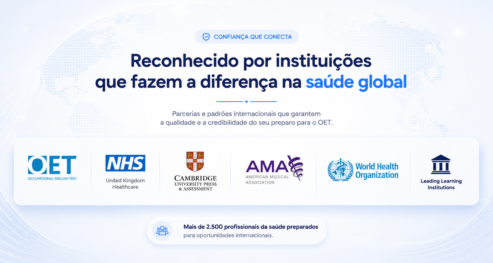
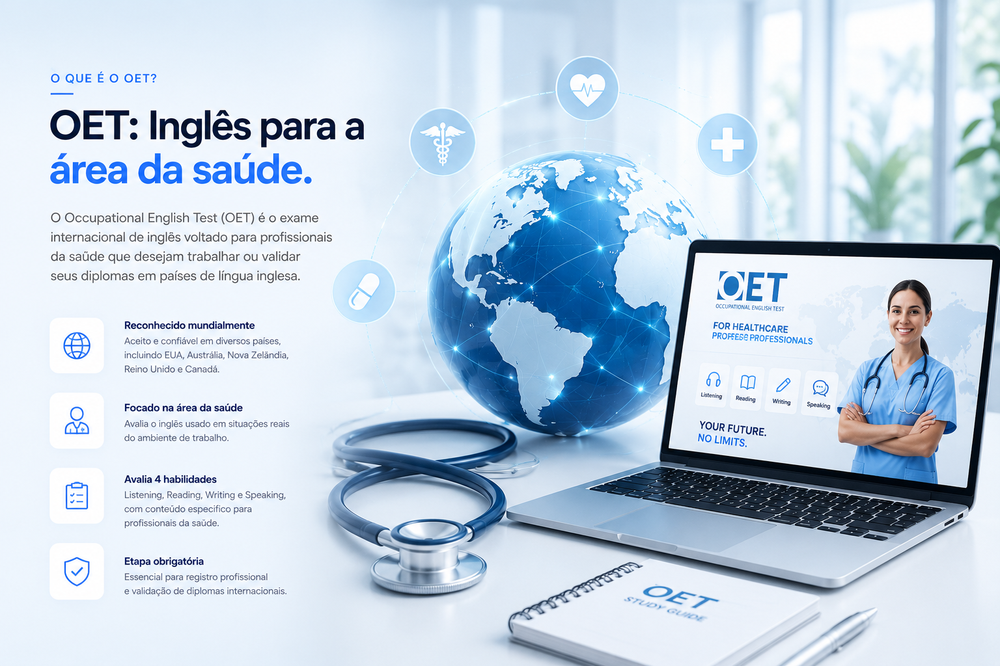
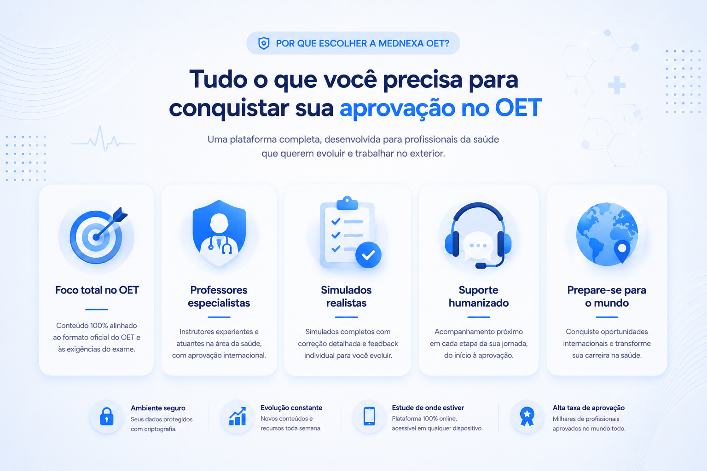
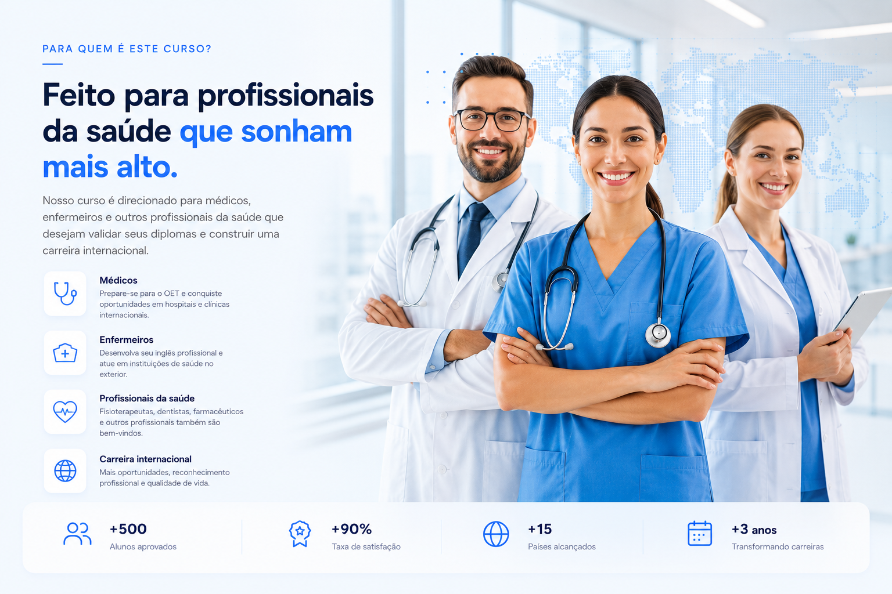
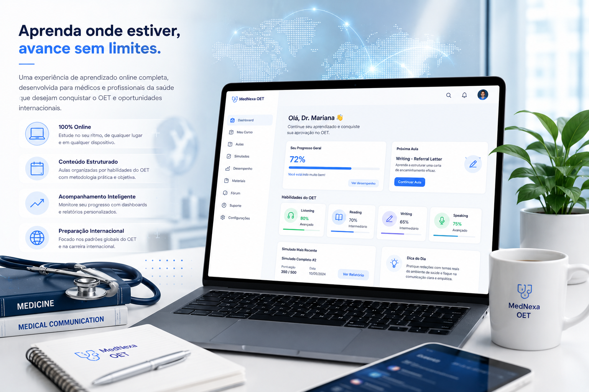
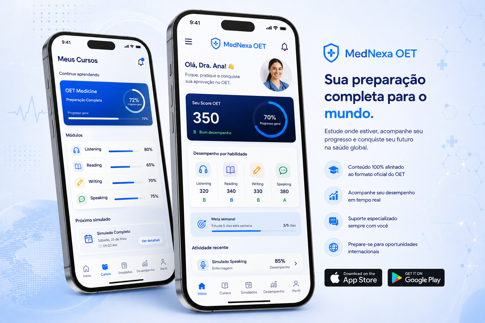
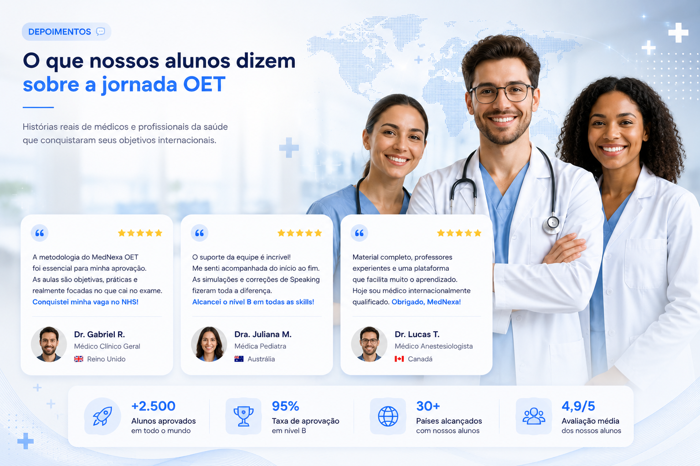
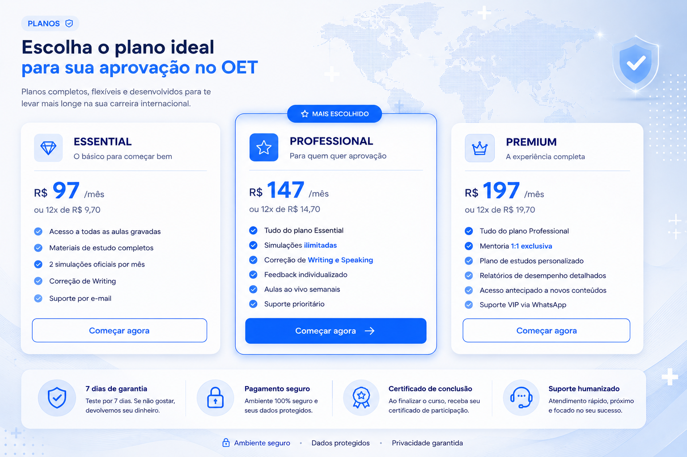
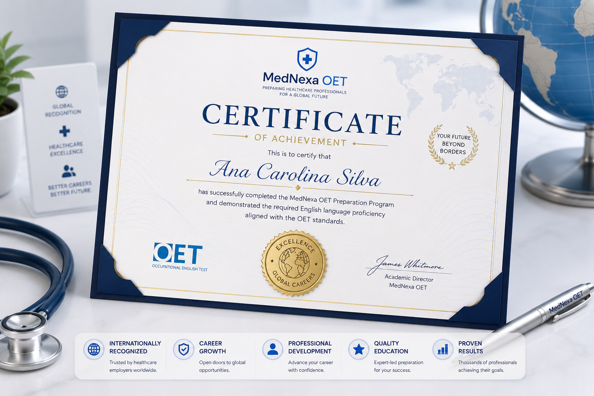
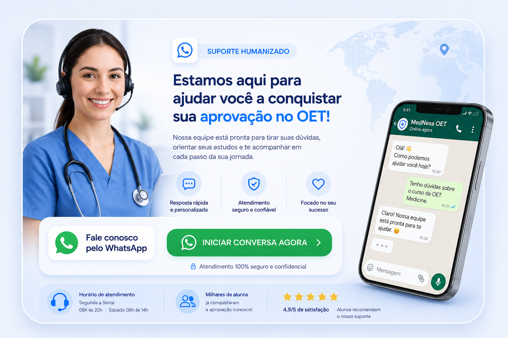

Prepare-se para o OET e conquiste sua carreira internacional
Curso preparatório premium para médicos e enfermeiros que desejam validar seus diplomas e atuar nos Estados Unidos e outros países.

Inglês profissional para a área da saúde.
O Occupational English Test é um exame internacional de proficiência em inglês voltado para profissionais da saúde que desejam atuar em países de língua inglesa.
- Reconhecido em diversos países
- Focado em situações reais da saúde
- Avalia Listening, Reading, Writing e Speaking
- Importante para validação profissional internacional

Tudo que você precisa para conquistar sua aprovação.
Uma preparação completa, estratégica e direcionada para profissionais da saúde.


Feito para profissionais da saúde que sonham mais alto.
Desenvolvido para médicos, enfermeiros e outros profissionais da saúde que buscam oportunidades internacionais.
Uma jornada simples, estratégica e acompanhada.
Matrícula
Acesso rápido ao conteúdo e orientação inicial.
Estudo guiado
Aulas estruturadas para cada habilidade do OET.
Simulados
Treinos realistas com feedback direcionado.
Aprovação
Preparação para alcançar seu objetivo internacional.
Aprenda onde estiver, acompanhe sua evolução e avance com clareza.
A plataforma oferece acompanhamento de progresso, atividades, simulados e organização completa da sua preparação.
Ver planos

Sua preparação também no celular.
Uma experiência moderna para estudar, acompanhar seu progresso e acessar conteúdos de qualquer dispositivo.
Histórias de profissionais que avançaram na jornada internacional.

Escolha o plano ideal para sua preparação.
Planos flexíveis, completos e focados na sua aprovação.

Conclua sua preparação com reconhecimento e clareza de evolução.
Ao finalizar sua jornada, você terá uma visão clara do seu desenvolvimento e preparação para o exame.
- Relatórios de desempenho
- Feedback individualizado
- Preparação orientada por objetivo


Você não precisa se preparar sozinho.
Nossa equipe acompanha sua jornada, tira dúvidas e ajuda você a manter constância até a aprovação.
Falar com suportePerguntas frequentes
Sim. A preparação é estruturada para orientar o aluno de forma progressiva, respeitando seu nível atual.
Sim. Você pode estudar de qualquer lugar, com acesso aos conteúdos e materiais pela plataforma.
Sim. Listening, Reading, Writing e Speaking são trabalhados com foco no contexto da saúde.
Sim. O aluno conta com suporte para dúvidas, orientação e acompanhamento durante a jornada.